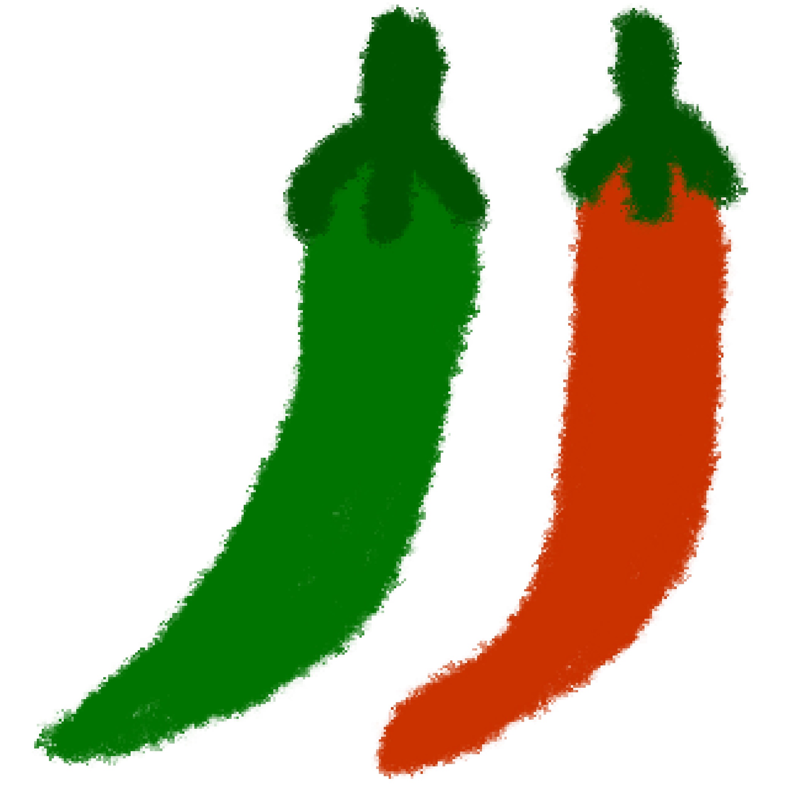

버섯 나물
표고버섯

참기름
국간장

깨

고추
물
1. 버섯을 손질한다.
표고 버섯(느타리, 양송이, 새송이 등 대체 가능)을 먹기 좋은 크기로 손으로 쭉쭉 찢어 준 다음 끓는 물에 숨만 죽을 정도로 살짝만 데친다.
버섯은 수분이 많아 바로 볶으면 물이 많이 나오기 때문에 미리 살짝 데치는 것이 좋다.
2. 맛있어지도록 잘 볶는다.
달궈진 후라이팬에 준비한 버섯과 참기름 1 큰술을 넣어 볶아 준뒤, 씨를 제거한 고추를 송송 썰어 살짝만 더 볶는다.
여기에 깨를 솔솔 뿌려 마무리하면 완성이다.
고추는 자칫 밍밍할 수 있는 버섯의 맛을 보완해주기 때문에 버섯 나물과 잘 어울리는 재료이다.
알록달록한 고추의 색은 보기에도 버섯 나물을 보기에도 맛있게 만들어준다.
쫄깃한 밥도둑.